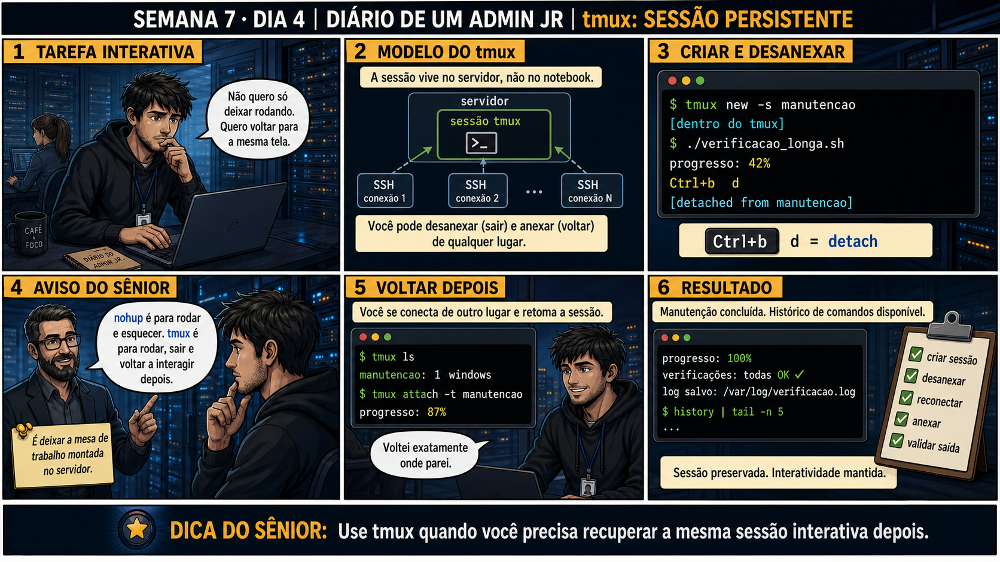

DIARIO DE UM ADMIN JR. | FASE 1 — LINUX, DO BÁSICO AO AVANÇADO
🔗 Conecta com ontem: nohup é ótimo pra "rodar e esquecer" — mas e quando você
precisa voltar e continuar DIGITANDO na mesma tela, não só ler um log? Hoje você aprende a ferramenta certa
pra esse cenário diferente: tmux.
🔓 Privilégio de hoje: manter sessões de terminal persistentes com tmux. Você
ganha a capacidade de desconectar e reconectar de qualquer lugar, retomando exatamente de onde parou.
Semana 7 · Dia 4 | Nível Júnior
tmux: Sessão Persistente de Verdade
use tmux quando você precisa recuperar a mesma sessão interativa depois
ANTES DE ALTERAR, OBSERVE. DEPOIS DE ALTERAR, VALIDE.

1. O chamado
Você precisa rodar uma manutenção longa e interativa — não só deixar rodando sozinha, mas
poder voltar depois e continuar digitando comandos na mesma tela. nohup não resolve isso: ele é pra rodar e
esquecer, não pra rodar e voltar a interagir.
💡 Passa o mouse nas palavras destacadas pra ver uma dica rápida — clica se quiser a explicação completa com analogia.
2. O sênior te conta
Quinta-feira, Semana 7
Ontem você resolveu o problema de "rodar e esquecer" com nohup e disown. Hoje o chamado parece parecido,
mas é diferente numa palavra: você não quer só que o processo sobreviva — você quer voltar depois e
continuar digitando na mesma tela, exatamente de onde parou.
Aprendi essa diferença tentando forçar a ferramenta errada pro problema. Precisava fazer uma manutenção
interativa longa — vários passos manuais, decisões no meio do caminho, não um script automático. Tentei
usar nohup, como tinha aprendido no dia anterior. Só que nohup roda o comando e desconecta
a saída — ele não te devolve um terminal interativo pra continuar digitando depois. Fiquei preso, sem
conseguir voltar pra dentro do processo que eu mesmo tinha iniciado.
Foi aí que descobri o tmux. A diferença central é onde a sessão vive: um terminal comum
(mesmo com nohup rodando algo dentro dele) está amarrado à conexão SSH. Uma sessão tmux vive NO SERVIDOR
— é um ambiente próprio, independente. Você pode desanexar (Ctrl+b d) e sair, e a sessão continua
lá, exatamente como você deixou, esperando você voltar. Quando você reconecta com
tmux attach -t nome, é como se nunca tivesse saído — o histórico, o cursor, tudo no lugar
exato.
Hoje você pratica exatamente essa diferença: criar uma sessão nomeada, desanexar de propósito, confirmar
que ela sobreviveu, e reconectar retomando o trabalho de onde parou. É a ferramenta certa pro problema
de ontem ser interativo, não só persistente.
3. Decodificador de conceitos
Clica em qualquer termo pra ver a definição completa e uma analogia do dia a dia:
4. Ferramentas e leitura da evidência
Comando
O que observar e por que importa
tmux new -s manutencao
Cria uma nova sessão nomeada, persistente no servidor.
Ctrl+b d
Desanexa da sessão sem encerrá-la — ela continua rodando.
tmux attach -t manutencao
Reconecta à sessão existente, de qualquer lugar, retomando o estado exato.
$ tmux new -s manutencao
[dentro do tmux]
$ ./verificacao_longa.sh
progresso: 42%
Ctrl+b d
[detached from manutencao]
--- de outro lugar, depois ---
$ tmux ls
manutencao: 1 windows
$ tmux attach -t manutencao
progresso: 87%
5. Laboratório guiado — pegue na mão, comando por comando
Segurança: execute os testes apenas em VM descartável e confirme nomes de discos, hosts e arquivos antes de cada comando.
Ação: instale o tmux se necessário e crie uma sessão nomeada.
$ sudo apt install tmux -y
$ tmux new -s teste
Resultado esperado: sessão tmux criada e ativa, prompt agora dentro do tmux.
Por que fizemos isso: um nome descritivo (não "session1") é o que facilita identificar a sessão certa quando houver várias abertas ao mesmo tempo.
Cilada comum: criar sessões sem nome (tmux new sem -s) — elas recebem números genéricos, difíceis de identificar depois.
Ação: dentro da sessão, rode um comando de teste com progresso visível e desanexe sem encerrar.
$ for i in $(seq 1 60); do echo "contador: $i"; sleep 5; done
# pressione Ctrl+b, solte, depois pressione d
Resultado esperado: voltou pro terminal normal (fora do tmux), mensagem "[detached from teste]", sessão continua rodando em background.
Por que fizemos isso: esse é o "sair da sala e apagar a luz" — sentir na prática que desanexar não é o mesmo que encerrar é o que fixa a diferença central do tmux.
Cilada comum: pressionar Ctrl+d em vez de Ctrl+b d — Ctrl+d sozinho pode fechar a sessão inteira, não apenas desanexar.
Ação: confirme que a sessão ainda existe, listando todas as sessões ativas.
$ tmux ls
Resultado esperado: sessão "teste" listada, confirmando que ela sobreviveu ao detach.
Por que fizemos isso: confirmar com tmux ls antes de reconectar é o que evita anexar na sessão errada quando existe mais de uma ativa — hábito que a Questão 2 vai testar.
Cilada comum: pular esse passo achando "só tem uma sessão mesmo" — em produção, várias pessoas podem ter sessões tmux abertas no mesmo servidor.
🧑🏫 Aqui entra o Mentor (em breve): se você tiver dúvida entre usar tmux ou nohup pra um cenário específico, este é o ponto onde o chat com o Sênior-IA vai ajudar a decidir.
Ação: reconecte à sessão e confirme que o comando de teste continuou rodando o tempo todo.
$ tmux attach -t teste
Resultado esperado: sessão retomada exatamente de onde parou, contador com número bem mais alto do que quando você desanexou.
Por que fizemos isso: ver o contador avançado, não reiniciado, é a prova concreta de que a sessão viveu no servidor o tempo todo, independente de você estar conectado ou não.
Cilada comum: se esquecer de encerrar o loop no final (Ctrl+c dentro da sessão) — ele continua consumindo recursos até você matar o processo ou a sessão.
Ação: documente nome da sessão, comando testado, comportamento após detach/attach.
# anote no seu diário de bordo:
Sessão: teste | Comando: contador em loop
Detach: Ctrl+b d, funcionou
Attach: tmux attach -t teste, retomou exatamente de onde parou
Resultado esperado: registro completo reproduzindo o painel 6 da prancha de hoje.
Por que fizemos isso: documentar o nome da sessão usada é útil pra próxima vez que você (ou um colega) precisar reconectar numa sessão de manutenção real, meses depois.
Cilada comum: esquecer de registrar o nome exato da sessão — sem ele, "tmux attach" sem -t pode falhar ou pegar a sessão errada quando houver mais de uma.
6. Antes de ver as opções — tenta responder
🧠 Recall ativo: qual é a diferença fundamental entre onde vive uma sessão de tmux e
onde vive um terminal comum?
Uma sessão tmux vive
NO SERVIDOR, não na conexão SSH — você pode
desanexar (detach)
e anexar (attach)
de qualquer lugar, e a sessão continua existindo mesmo sem ninguém conectado a ela no momento.
QUESTÃO 1 de 3
7. Questão comentada — clica numa alternativa
Você precisa rodar uma manutenção longa e interativa, podendo voltar depois pra
continuar digitando na mesma tela. Qual é a ferramenta e sequência corretas?
💡 Analogia do Sênior para Fixar: O 'tmux' é como a sala de reuniões com luz acesa no escritório: você pode sair do prédio (desconectar o SSH), ir para casa e no dia seguinte voltar e encontrar tudo exatamente onde deixou.
QUESTÃO 2 de 3 — cenário de erro real
7.1 tmux ls mostra a sessão "manutencao" — como confirmar que é a sessão certa antes de anexar?
Se existirem múltiplas sessões tmux abertas ao mesmo tempo, tmux ls lista todas com seus
nomes.
Qual é a prática correta antes de rodar tmux attach?
💡 Analogia do Sênior para Fixar: O comando 'tmux attach' é como reabrir a porta da sala: reconecta a sua sessão com todos os terminais, logs e comandos que continuaram rodando ininterruptamente.
QUESTÃO 3 de 3 — detalhe que confunde todo iniciante
7.2 "Fechar a janela do terminal sem desanexar é a mesma coisa que Ctrl+b d?"
Um colega simplesmente fecha a janela do terminal (ou perde a conexão SSH) sem usar
Ctrl+b d primeiro, achando que dá no mesmo.
Isso encerra a sessão tmux ou ela continua rodando?
💡 Analogia do Sênior para Fixar: Dividir a tela do tmux em painéis (split) é como colocar múltiplos monitores na mesma janela: permite rodar um script na esquerda e monitorar os logs na direita simultaneamente.
8. Procedimento profissional
Identifique se a tarefa precisa de interação contínua (tmux) ou só rodar sozinha (nohup).
Crie a sessão tmux com um nome descritivo (tmux new -s nome).
Desanexe com Ctrl+b d quando precisar sair, sem encerrar.
Liste sessões com tmux ls antes de reconectar, confirmando o nome certo.
Reconecte com tmux attach -t nome e continue exatamente de onde parou.
Prevenção
Estabeleça uma convenção de nomenclatura de sessão pra equipe (ex.:
tmux new -s [seu-usuário]-[tarefa]). Isso evita confusão quando várias pessoas têm sessões
tmux simultâneas no mesmo servidor, e torna o tmux ls autoexplicativo pra qualquer um que olhar depois.
9. Validação e encerramento
tmux foi escolhido corretamente pra tarefa interativa, não nohup.
A sessão foi nomeada de forma descritiva, facilitando identificação futura.
Detach e attach foram testados de verdade, confirmando persistência.
O nome da sessão foi confirmado com tmux ls antes de reconectar.
Rollback e limites
Uma sessão tmux pode ser encerrada de propósito com tmux kill-session -t nome —
isso sim é definitivo, encerrando tudo que estava rodando dentro dela. Diferente de simplesmente desanexar,
que é sempre reversível.
💡 Sobre repetição espaçada: "ferramenta certa pro cenário certo" conecta com
o Dia 3 de ontem — nohup pra rodar e esquecer, tmux pra rodar e voltar a interagir, duas necessidades
diferentes. O Anki vai conectar os dois.
10. Resposta final
Alternativa correta: B. Nesta aula, a decisão correta foi usar
tmux new -s manutencao, Ctrl+b d pra desanexar, e tmux attach -t manutencao pra voltar. O ponto
central do caso é este: use tmux quando você precisa recuperar a mesma sessão interativa depois.
🔓 O que você desbloqueou hoje
Capacidade de manter sessões de terminal persistentes e interativas. Amanhã
fecha a Semana 7: ps avançado e /proc, pra entender profundamente o que um processo realmente é por dentro.